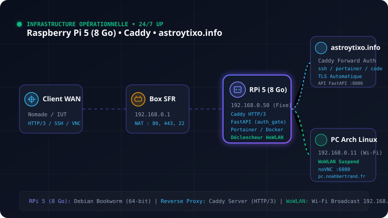

Voilà mon système maison :
comment je gère ma petite infra
Bienvenue dans les coulisses de mon installation ! C'est comme ça que je gère ma petite infrastructure au quotidien. Sur un Raspberry Pi 5 (8 Go) branché à ma Box SFR, j'héberge mes petits services utiles, Caddy s'occupe de gérer mes domaines et le HTTPS en toute simplicité, et un simple bouton sur mon dashboard me permet d'allumer mon PC de travail à distance en Wi-Fi (WoWLAN) pour l'utiliser dans mon navigateur avec noVNC.
L'Architecture en un Coup d'Œil
Pas besoin de faire compliqué : 4 éléments qui communiquent ensemble de manière fluide et sécurisée.
Moi à l'extérieur
En cours à l'IUT ou en 4G
Ma Box SFR
192.168.0.1
Serveur Pi 5
192.168.0.50 (Fixe)
PC Arch Linux
192.168.0.11 (Wi-Fi)
Raspberry Pi 5 (8 Go) — Le chef d'orchestre
Schéma & Architecture Réseau

Mes Services & Sous-domaines
Pourquoi j'utilise Caddy Server ? Parce que c'est simple et moderne : pas de certificats compliqués à configurer manuellement, il s'occupe de tout en HTTPS automatique.
Ce qui tourne sur mon Raspberry Pi
Mes sous-domaines accessiblesDès qu'une requête arrive sur ma box SFR, Caddy regarde l'adresse demandée et l'envoie directement au bon service :
| Adresse Web | Ce que c'est | Sécurité |
|---|---|---|
| astroytixo.info | Mon Dashboard d'accueil (FastAPI) & bouton de réveil | Public (HTTPS) |
| ssh.astroytixo.info | Un terminal SSH directement dans mon navigateur (ttyd) | Protégé |
| portainer.astroytixo.info | Interface visuelle pour gérer mes conteneurs Docker | Protégé |
| codejelly.astroytixo.info | Mon outil de développement web Code Jelly | Protégé |
| pc.noahbertrand.fr | L'écran de mon PC de bureau à distance avec noVNC | Mot de passe |
| job.astroytixo.info | Gestion de mes tâches et scripts en tâche de fond | Actif |
Une Seule Connexion
Forward Auth simplePour éviter de devoir taper un mot de passe différent sur chaque service, j'ai configuré un système tout simple :
- Je me connecte une seule fois sur mon dashboard astroytixo.info.
- Quand j'ouvre
ssh,portaineroucodejelly, Caddy demande discrètement à mon dashboard si c'est bien moi. - Si je suis connecté, j'accède à tout en 1 clic. Si je ne le suis pas, Caddy me redirige vers l'accueil !
Comment j'allume mon PC depuis les cours
Mon PC sous Arch Linux reste en veille légère. Dès que j'en ai besoin, je l'allume en quelques secondes depuis mon téléphone ou mon ordi portable.
L'Astuce du Wi-Fi (WoWLAN)
Veille suspendComme mon PC est connecté en Wi-Fi et non en câble, une extinction complète couperait la connexion sans fil. Pour régler ça simplement, mon PC est configuré pour se mettre en veille légère (Suspend) : il ne consomme presque rien, mais sa carte Wi-Fi reste prête à entendre le paquet de réveil !
Le Contrôle avec noVNC
Dans le navigateurUne fois que le PC s'est réveillé en 2-3 secondes, je vais sur pc.noahbertrand.fr : j'ai directement l'écran complet de mon PC dans mon navigateur web grâce à noVNC, sans avoir besoin d'installer de logiciel compliqué sur la machine d'où je me connecte.
En résumé, comment ça se passe en pratique :
1. J'ouvre mon dashboard
Depuis les cours ou dehors, je vais sur astroytixo.info et je clique sur le bouton de
réveil.
2. Le Raspberry Pi diffuse l'ordre
Mon Raspberry Pi 5, toujours allumé à la maison, envoie le paquet magique sur le réseau Wi-Fi local.
3. Mon PC sous Arch Linux se réveille
En 2 à 3 secondes, mon PC sort de veille et ses services redeviennent actifs.
4. Je prends la main dans mon navigateur
J'ouvre pc.noahbertrand.fr et je retrouve mon bureau Linux complet sur mon écran !